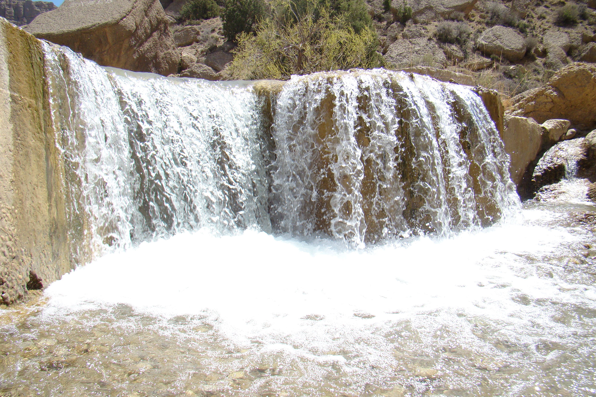
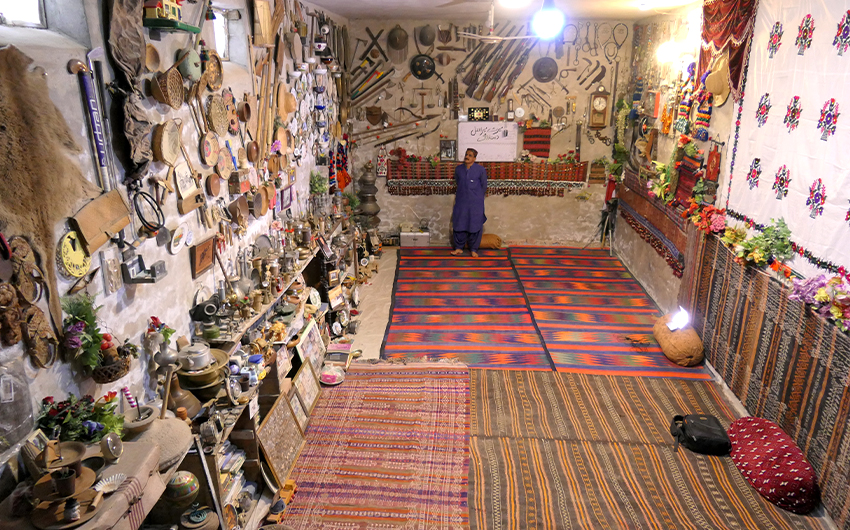
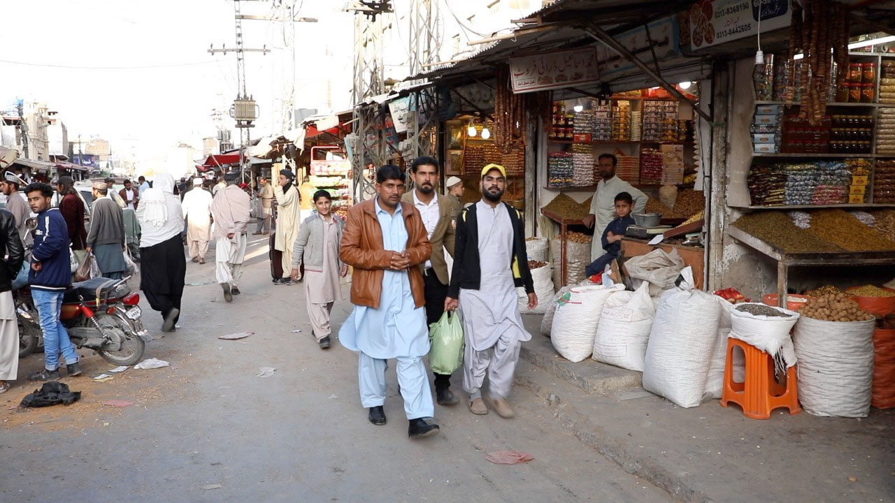

The Fruit Garden of Pakistan
Quetta, known as the "Fruit Garden of Pakistan," is the provincial capital of Balochistan, located at an elevation of approximately 1,680 metres in a dry mountain valley. The city is surrounded by mountains and is famous for its pomegranates, grapes, apples, and dried fruit.
Despite its relatively small size, Quetta has a strategic importance as a hub for trade between Pakistan, Afghanistan, and Iran. The city has a rich blend of Pashtun, Baloch, Hazara, and Brahui cultures.

Top Attractions

Hanna Lake
A picturesque reservoir and popular tourist spot surrounded by rugged mountains and juniper trees.

Urak Valley
A beautiful valley near Quetta with fruit orchards, streams, and scenic mountain landscapes.

Quetta Museum
Displays artefacts relating to Balochistan's ancient civilisations, including items from the Bronze Age Kulli culture.

Liaquat Bazaar
The main commercial market of Quetta, famous for carpets, jewellery, dried fruits, and traditional Baloch crafts.